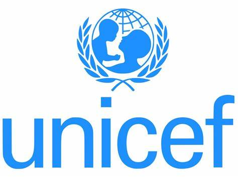
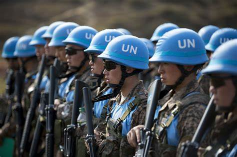
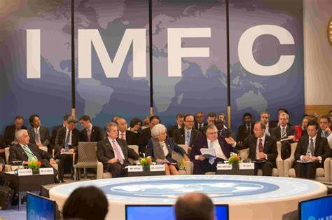
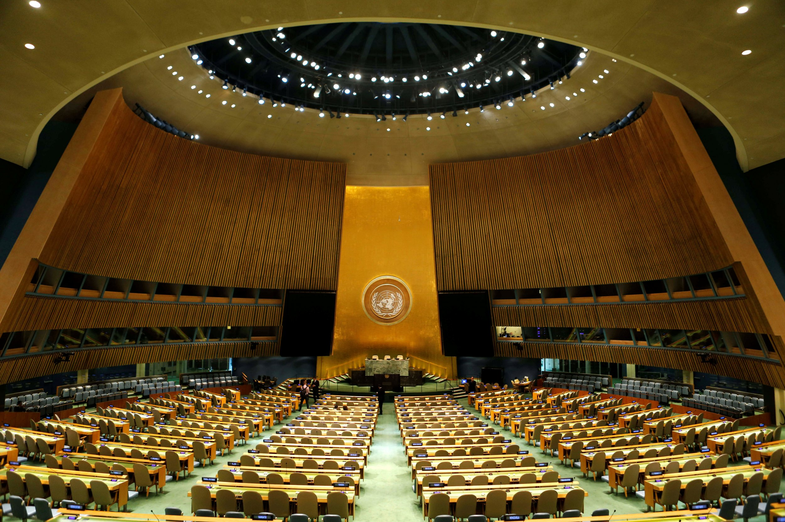
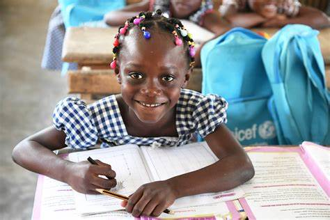

While the previous three pages have predicted doom and gloom, it is not too late for humanity. If we manage to unite all eight billion humans to one cause, we will be able to solve all of these problems given enough attention and time.
Formed in 1947, the United Nations is an international organization that is constituted by the world's 195 countries and 2 observer states (Palestine and the Vatican). Today it is still serves as an example of how countries can work together to solve world issues.
The United Nations funds many initiatives worldwide to help in stopping conflicts and aid national governments in times of crises.
With a mission to protect children around the world, UNICEF aims to uphold children's rights and keep them safe from abuse.
The UN Peacekeeping missions around the world aim to prevent conflicts from starting, especially in areas with tension. Although armed with modern weapons, they are ordered not to open fire unless they are fired at first.
The IMF lets countries loan or borrow money for their own development, and allows countries to prevent themselves from going into bankruptcy, thus maintaining economic stability in the region.
The United Nations has thus far proven effective in stopping most conflicts. Although some major improvements need to be made, especially in terms of enforcement of international law, the UN is a better solution to disputes compared to any war. It has also helped in maintaining global stability, and helps in giving smaller countries a bigger say in international affairs.
In recent times, the United Nations has come under criticism after it couldn't prevent issues such as the escalation of the War in Ukraine or border skirmishes along the India-China border. Critics have also pointed out the UN's ineffectiveness when the international community does not unilaterally agree on one decision, usually ending when one of the "Big Five" (Permanent members of the UN Security Council; USA, Russia, China, UK and France) veto a UN vote when it is in opposition to their goals.
The United Nations' Official Website
The United Nations Peacekeeping Force Official Website
UNICEF's Official Website
The UN's Article about how the UN General Assembly works
The United Nations Flag, a light blue background with the white UN Emblem in the center
The UN General Assembly, where countries discuss international disputes and how best to resolve them
UNICEF is mostly present in impoverished regions of the world, such as sub-Saharan and Central Africa.